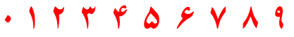

This page gathers together basic information about the Arabic script and its use for the Urdu language. It aims (generally) to provide an overview of the orthography and typographic features, and (specifically) to advise how to write Urdu using Unicode; for greater details follow the footnote links (especially those with an arrow alongside them).
See the Arabic page for most of the information about how the Arabic script works, and the orthography used for the Arabic language. This page aims to provide Urdu-specific information.
For similar information related to this and other scripts, see the script links pages.
Clicking on red text examples, or highlighting part of the sample text shows a list of characters. Click on the vertical blue bar (bottom right) to change font settings for the sample text. Colours and annotations on panels listing characters are relevant to their use for the Urdu language.
Unless in parentheses, the transcriptions in italics that follow Urdu text are a transliteration developed for these pages. Those in parentheses are usually more standard transcriptions. Transcriptions in ⌈ brackets ⌋ may be phonemic or phonetic.
Sample (Urdu)
دفعہ ۱۔
تمام انسان آزاد اور حقوق و عزت کے اعتبار سے برابر پیدا ہوئے ہیں۔ انہیں ضمیر اور عقل ودیعت ہوئی ہے۔ اس لئے انہیں ایک دوسرے کے ساتھ بھائی چارے کا سلوک کرنا چاہیئے۔
دفعہ ۲۔
ہر شخص ان تمام آزادیوں اور حقوق کا مستحق ہے جو اس اعلان میں بیان کئے گئے ہیں، اور اس حق پر نسل، رنگ، جنس، زبان، مذہب اور سیاسی تفریق کا یا کسی قسم کے عقیدے، قوم، معاشرے، دولت یا خاندانی حیثیت وغیرہ کا کوئی اثر نہ پڑے گا۔
اس کے علاوہ جس علاقے یا ملک سے جو شخص تعلق رکھتا ہے اس کی سیاسی کیفیت دائرہ اختیار یا بین الاقوامی حیثیت کی بنا پر اس سے کوئی امتیازی سلوک نہیں کیا جائے گا۔ چاہے وہ ملک یا علاقہ آزاد ہو یا تولیتی ہو یا غیر مختار ہو یا سیاسی اقتدار کے لحاظ سے کسی دوسری بندش کا پابند ہو۔
The Urdu alphabet is the right-to-left alphabet used for the Urdu language. It is a modification of the Persian alphabet known as Perso-Arabic, which is itself a derivative of the Arabic alphabet. The Urdu alphabet has up to 58 letters. With 39 basic letters and no distinct letter cases, the Urdu alphabet is typically written in the calligraphic Nastaʿlīq script, whereas Arabic is more commonly in the Naskh style. ...
The Nastaʿlīq calligraphic writing style began as a Persian mixture of scripts Naskh and Ta'liq. After the Mughal conquest, Nasta'liq became the preferred writing style for Urdu. It is the dominant style in Pakistan, and many Urdu writers elsewhere in the world use it. Nastaʿlīq is more cursive and flowing than its Naskh counterpart.
Urdu uses the Arabic script with extensions to covers its much wider repertoire of sounds. A number of the extensions are based on those developed for Persian (Farsi). See the table to the right for a brief overview of features for the Arabic script, taken from the Script Comparison Table.
The script type is abjad, ie. the script is largely consonantal and short vowel sounds are typically not shown. Some of the consonant
characters double as long vowels (eg. ی and و). The vowels are not usually clearly defined, but when
necessary, vowel information can be represented by combining marks appearing above or below the base consonant. The absence of a vowel and doubling
of consonants can be indicated in the same way.
The alphabet includes aspirated letters that have to be composed with two Unicode characters and a je letter that uses different Unicode characters depending on the context.
Although it is not always easy to guess the vowel sounds in a word, the consonants are largely reliable phonetically. There is mostly a one-to-one correspondance between letters and sounds.
Text direction
Arabic script is written horizontally and right-to-left in the main, but as with most RTL scripts, numbers and embedded LTR script text are written left-to-right (producing 'bidirectional' text).
رکھتا ہے اور 2009ء میں UEFA کپ کے
Urdu words are read RTL, starting on the right, but numbers and Latin text are read left-to-right.
Unicode provides a set of 10 formatting characters that can be used to control the direction of text when displayed. These are listed in the article How to use Unicode controls for bidi text.
Character lists show:
Vowels
There are 10 vowel sounds, though there are also allophonic variants. They are usually grouped into pairs of 'short' and 'long' sounds - although the difference is qualitative, rather than just length. The basic phonemes are as follows:
Click on the sounds to reveal locations in this document where they are mentioned.
The phoneme ə is sometimes written a in phonemic transcriptions in this material. (This is the letter usually used in other sources too.)
Urdu follows Arabic in using diacritics to express short vowel sounds, but also rarely uses them in normal text. The basic set of diacritics used for vowels is as follows.
َ␣ً␣ُ␣ٌ␣ِ␣ٍ␣ْ␣ٗ␣ٓ␣ٰ␣ٖ␣٘
Given the extra phonetic sounds in Urdu, compared to Arabic, the way characters are used to express vowels is much more complicated. The following table shows the standard ways of indicating vowel sounds, and shows what diacritics would be used if they were shown. Note however, that context can change the
value of a vowel diacritic (such as a following 'ain or he) – these are detailed below the table. Three short vowels are not typically found in final position. The examples only show diacritics for the sound currently being discussed.
sound
final
medial
initial
base component
final
medial
initial
ə
zabar
بَبbəb
اَبəb
ɪ
zer
دِنdɪn
اِنɪn
ʊ
peʃ
سُستsʊst
اُسʊs
ɑː
alɪf
لکھناlɪkʰnɑː
باغbɑːɣ
آجɑːʤ
e
je
بجےbaʤe
بیٹاbeʈɑː
ایکek
iː
zer+je / je
گاریgɑːriː
تِینtiːn
اِینٹiːnʈ
ɛ
zabar+je
ہَےhɛ
کَیساkɛsɑː
اَیساɛsɑː
o
vɑːuː
کوko
ٹوپیʈopiː
اوسos
uː
peʃ+vɑːuː or vɑːuː+inverted peʃ
ہندُوhɪnduː ہندوٗhɪnduː
پُوراpuːrɑː ثوٗراpuːrɑː
اُوپرuːpar اوٗپرuːpar
ɔ
zabar+vɑːuː
نَوnɔ
شَوقʃɔq
اَورɔr
'ain
The letter ع[U+0639 ARABIC LETTER AIN] is used in words of Arabic origin. In these words it is typically not pronounced but can support vowels. In this way, at the beginning of a word it can fulfill the same function as the alif, eg. عَربʿarbarabArab. The Urdu word اَرَبɑarabarabnecessity, though pronounced the same, becomes a completely different word by its spelling. Note, in particular, that the equivalent of آ[U+0622 ARABIC LETTER ALEF WITH MADDA ABOVE]ɑː is عا, as in عادتʿɑdtɑːdathabit.
A following ع may also affect a short vowel diacritic to produce a long vowel sound as follows:
ɑː from zabar followed by 'ain, eg. بَعدbaʿdbɑːdafter
e from zer followed by 'ain, eg. شِعرʃiʿrseːrverse
o from peʃ followed by 'ain, eg. شُعلہʃuʿlḫʃolɑːflame
The similar diacritic ◌ٖ [U+0656 ARABIC SUBSCRIPT ALEF] is used to indicate that a vowel is iː or i rather than e, eg. نُحْیٖnuh͓yᵢ. This diacritic is not usually needed, and serves only to emphasise that the vowel is long.
◌ٗ [U+0657 ARABIC INVERTED DAMMA] is used to indicate that the vowel is uː or ʊ rather than ɔ, eg. حبل حلالہٗhbl hlɑlḫᵘ. It is not usually needed, and serves only to emphasise that the vowel is long.
The doubled vowel diacritics, ◌ً [U+064B ARABIC FATHATAN], ◌ٌ [U+064C ARABIC DAMMATAN], and ◌ٍ [U+064D ARABIC KASRATAN] are used at the ends of certain Arabic adverbs. The doubled zabar (fathatan) is the most common of the three marks of this type. Although the mark appears over an alif the vowel sound is short. Examples, یقیناًyqynɑaⁿyakiːnancertainly; مثلاًmṡlɑaⁿmasalanfor example.
Nasalisation
Vowels may be nasalised, like at the end of the French word élan. This is indicated in Urdu by a glyph called nun ghunna that looks like the letter nun except that in word final position it has no dot, eg. ماںmɑñmãːmother, ٹاںگʈɑñgtãːgleg, and کروںkrvñkarũːI may do. In Unicode there are different characters for each of these uses.
The diacritic◌٘ [U+0658 ARABIC MARK NOON GHUNNA] is used when people want to make it clear that a noon character represents nasalisation rather than the sound n, eg. ٹاںگʈɑñgtãːgleg. It is not used in a standard way, just when the user prefers, and is fairly uncommon.
Vowel junctions
A hamzā plays more than one role in Urdu. One such role is to indicate the boundaries between
vowel sounds when there is no intervening consonant. Depending on the vowels concerned, it is used in a number of different ways. It can also have
two different shapes, one like the initial form of 'ain and the other more like an italic 's'.
In this example we see hamza in its isolated form, انشاءﷲɪnʃalːaːGod willing.
The short vowel ɪ as a second vowel is also represented by hamzā 'on its chair' alone,
eg. کوئلہkvɪ͑lḫkoɪlɑːcoal;
لائنlɑɪ͑nlɑːɪnqueue.
When the second vowel is an uː or o represented by و[U+0648 ARABIC LETTER WAW], the hamzā typically sits directly on top of the و, eg. آؤɑ̄u͑ɑːocome; جاؤںʤɑu͑ñʤɑːũːI may go. Note that often the hamzā is omitted in this situation. To represent this in Unicode use ؤ[U+0624 ARABIC LETTER WAW WITH HAMZA ABOVE].
Many words have the vowel combinations iːɑ̃ iːe iːo, where hamzā is not typically
used, eg. لڑکیاںlɽkyɑñlaɽkiːɑ̃ːgirls;
چلیےčlyɛʧaliːecome on;
لڑکیوں کاlɽkyvñ kɑlaɽkiːõ kɑːof the girls.
Hamzā is also used to represent izāfat when the preceding word ends in either
choṭī he or ye (see below).
Izāfat
Izāfatɪzɑːfat is the name given to the short vowel ɛ used to describe a
relationship between two words. It may be translated of, eg. as in the Lion of Punjab.
This sound occurs at the end of a word and is mostly represented using zer. Sometimes, however, the combining mark is not shown, even though
pronounced. Examples: شیرِ پنجابʃyri pnʤɑbʃer ɛ panʤɑːbLion of the Punjab; طالبِ علمt̂ɑlbi ʿlmtɑːlɪb ɛ ɪlmseeker of knowledge (student).
When the preceding word ends in
a silentchoṭī heہ[U+06C1 ARABIC LETTER HEH GOAL], izafat is represented by a combining hamza, eg. قطرۂ آبqt̂re͑ ɑ̄bqatra ɛ ɑːbdrop of water. Note that if the choṭī he is pronounced, then zer is used, eg. آہِ گرمɑ̄ḫi grmāh-e garmhot sigh.
When the preceding word ends in yeی[U+06CC ARABIC LETTER FARSI YEH], sources differ on the approach to take. Some sources say that you should just add zer, as described before. Others say that izafat is represented by a combining hamza, eg. ولیٔ کاملvly‘ kɑmlvaliː ɛ kɑːmɪlperfect saint. Should you use ئ[U+0626 ARABIC LETTER YEH WITH HAMZA ABOVE] or ی[U+06CC ARABIC LETTER FARSI YEH] + combining hamza? Most of the sources proposing this approach seem to use the former. With Google fonts the result looks the same either way. With Nafees Nastaleeq only the latter works. The latter seems more logical, wrt searching, semantics, etc.
When the preceding word ends in a long a or u vowel, izafat is represented using hamza 'on it's chair', ie. ئ[U+0626 ARABIC LETTER YEH WITH HAMZA ABOVE], plus ے[U+06D2 ARABIC LETTER YEH BARREE], eg. صدائے بلندŝdɑɪ͑ɛ blndsadɑː ɛ bulanda high voice;
روئے زمینrvɪ͑ɛ zmynruː ɛ zamiːnthe surface of the ground. Sometimes, however, the hamza is not shown.[2 p99][11]
Consonants
Consonant sounds
Click on the sounds to reveal locations in this document where they are mentioned.
labial
dental
alveolar
post-
alveolar
retroflex
palatal
velar
uvular
glottal
stop
pb pʰbʱ
td tʰdʱ
ʈɖ ʈʰɖʱ
kɡ kʰɡʱ
q
ʔ
affricate
t͡ʃd͡ʒ t͡ʃʰd͡ʒʱ
fricative
fv
sz
ʃ
ʂ
xɣ
hɦ
nasal
m
n
ɳ
ɲ
ŋ
approximant
ʋ
l
j
trill/flap
rʱɾ
ɽɽʱ
Sourcewp. Phones in a lighter colour are non-native or allophones.
Consonant letters
The alphabet standardised by the National Language Authority in Pakistan counts 59 letters, of which 18 are digraphs representing aspirated consonants.
Other characters found in Urdu text include the following. These are introduced further down this page, but you can, as usual, find out more by clicking on them.
The absence of a vowel sound can be indicated with the diacritic ْ[U+0652 ARABIC SUKUN], called sukūn or jazm, although this diacritic is not normally shown in text, eg. سَخْتsax͓tsaxthard.
It has various possible forms, including a small round circle, something that looks like peʃ, and something like a circumflex.
This diacritic is never written above the final character in a word, because as a rule a short vowel is not pronounced in this position.
Consonant lengthening
Consonant sounds can be lengthened. In vowelled text, which is very rare, this is shown using the diacritic ّ[U+0651 ARABIC SHADDA], called taʃdiːd, eg. ستّرstᵚrsattarseventy. More often than not, this is not written.
Arabic definite article
The pronunciation of ال (alif followed by lām) varies when it represents the Arabic definite article. This affects many words in Urdu that have come from Arabic, in
particular names and adverbial expressions.
The lām is not pronounced if it precedes one of the following characters:
ت␣ث␣د␣ذ␣ر␣ز␣س␣ش␣ص␣ض␣ط␣ظ␣ل␣ن
Instead, the following sound is doubled. A tašdīd may sometimes be
used to indicate this. Example: السلام علیکمɑlslɑm ʿlykmasːalɑːm alaikumgreetings.
Often the alif is not pronounced after a short preceding word that ends in a vowel. If the preceding vowel
was long, it is shortened in this process. Examples: بالکلbɑlklbɪlkulabsolutely; فی الحالfy ɑlhɑlfilhɑːlat present.
Often the vowel is pronounced ʊ, eg. دارالحکومتdɑrɑlhkvmtdɑːrʊlhʊkuːmatcapital.
Numbers
Urdu uses the extended arabic-indic digits in the Arabic block.
۰␣۱␣۲␣۳␣۴␣۵␣۶␣۷␣۸␣۹
This is a separate set of characters from those used for Arabic, to accommodate different shaping and directional behaviour. Shapes differ from those of Arabic for the digits 4, 5, and 7.
Urdu
Persian

Arabic
Comparison of digit shapes in Urdu, Persian and Arabic.
Persian also uses the same characters for digits, but there are some systematic shape differences between Persian and Urdu for the digits 4, 6, and 7.
That said, Urdu Wikipedia currently uses European digits and ، [U+060C ARABIC COMMA] and . [U+002E FULL STOP], respectively, for thousands and decimal separators. (English) Wikipedia says that In Pakistan, Western Arabic numerals are more extensively used as a considerable majority of the population is anglophone. Eastern numerals still continue to see use in Urdu publications and newspapers, as well as sign boards.
Urdu also has a sign [U+0600 ARABIC NUMBER SIGN] which can be used to indicate a number, eg. ۱۲۳. [The Noto Nastaliq Urdu webfont doesn't seem to extend the sign below the number, whereas the same font on the system does. Both that font and Nafees Nastaleeq require this sign to be added after the number, and appear to treat it like a fixed width combining mark, rather than a subtending mark that grows with the number.]
Dates are indicated by placing the long sweep of [U+0601 ARABIC SIGN SANAH] below the year digits. For the Gregorian calendar this is followed with the word عیسویʿysvyiːsviːChristian Era, usually abbreviated as a hamza ء. Dates using the Muslim calendar are followed by the word ہجریḫʤryhɪʤriː, abbreviated with the symbol ھ.
The sanh sign is typed before the digits (in a rtl context): eg. ۲۰۰۴ء (2004). It is not a combining character, even though it displays beneath the digits. The length of the symbol may vary according to the number of digits. It is terminated by a non-digit character.
[U+0604 ARABIC SIGN SAMVAT] is another subtending mark, intended to indicate a year in the Śaka calendar.
Symbols & honorifics
Honorifics
The following combining characters are used with names as honorifics, eg. قاضی نور محمّدؒqɑẑy nvr mhmᵚdؒkaziː nur mamed rahmatulla alayheQazi Nur Muhammad, may God have mercy upon him!. They are combining characters that appear over the name at a point chosen by the author.
ؔ␣ؓ␣ؒ␣ؑ␣ؐ
Bismilla
﷽ [U+FDFD ARABIC LIGATURE BISMILLAH AR-RAHMAN AR-RAHEEM] is used by Muslims in various contexts including the constitutions of countries where Islam has a significant presence. The shape varies significantly from font to font and usage to usage.
Glyph shaping & positioning
Cursive script
Is this script cursive? Is the basic shape of a letter radically changed? Is it sometimes not cursive? Are there any special features to note? Are Unicode joiner and non-joiner characters needed to override default joining behaviours?
Arabic script joins letters together. This results in four different shapes for most letters (including an isolated shape).
U+200D ZERO WIDTH JOINER produces a joining glyph when a character wouldn't otherwise join with something, eg. ان س ان.
Context-based positioning
Are there requirements to position diacritics or other items specially, depending on context? Does the script have multiple diacritics competing for the same location relative to the base?
Baselines & inline alignment
Does the script have special requirements for baseline alignment between mixed scripts and in general?
The alphabetic baseline is a strong feature of Arabic script on the whole, since characters tend to join there. The nastaliq style of the script, on the other hand, uses arrangements of joined glyphs that cascade downwards from right to left, and ressemble a strongly sloping baseline. See the example in Fig. fig_baseline.
Font styles
Are italicisation, bolding, oblique, etc relevant? Do italic fonts lean in the right direction? Is synthesised italicisation problematic? Are there other problems relating to bolding or italicisation - perhaps relating to generalised assumptions of applicability?
Since the script is cursive (ie. letters are typically joined) the letter forms can vary considerably according to position.
Urdu is typically written in a nasta'liq style, ie. the connected letters in a word tend to follow a sloping baseline. This is
achieved in Unicode by applying the correct font – the underlying characters used are not different for nasta'liq vs. other styles.
مستحق • شخص • کیفیت
Sloping baselines in Urdu nastaliq text.
Structural boundaries & markers
Grapheme boundaries
Do Unicode grapheme clusters appropriately segment character units for the script? Are there special requirements when double-clicking on the text, or moving through the text with the cursor, or backspace, etc.?
Word boundaries
Are words separated by spaces, or other characters? Are there special requirements when double-clicking on the text? Are words hyphenated?
Words are separated by spaces.
Phrase boundaries
What characters are used to indicate the boundaries of phrases, sentences, and sections?
Urdu uses a mixture of western and arabic punctuation.
For separators at the sentence level and below, the following are used in Urdu text, where the right column indicates approximate equivalences to Latin script.
Urdu text using an Arabic comma, and an Arabic full stop.
In poetry, ؎ [U+060E ARABIC POETIC VERSE SIGN] is used to mark the beginning of poetic verse, and ؏ [U+060F ARABIC SIGN MISRA] is used to indicate a single line (misra) of a couplet (shayr) from an Urdu poem, when quoted in text. It is used at the beginning of the line, and is followed by the line of verse. For more information and examples, follow the links on the character names.
Bracketing & parentheses
What characters are used as parentheses, or to bracket information?
Quotations
What characters are used to indicate quotations? Do quotations within quotations use different characters? What characters are used to indicate dialogue?
Abbreviation, ellipsis & repetition
What characters are used to indicate abbreviation, ellipsis & repetition?
Emphasis & text decoration
How are emphasis and highlighting achieved? If lines are drawn alongside, over or through the text, do they need to be a special distance from the text itself? Is it important to skip characters when underlining, etc? How do things change for vertically set text?
Inline notes & annotations
What mechanisms, if any, are used to create inline notes and annotations? (For referent-type notes such as footnotes, see below.)
Line & paragraph layout
Line breaking & hyphenation
Are there special rules about the way text wraps when it hits the end of a line? Does line-breaking wrap whole 'words' at a time, or characters, or something else (such as syllables in Tibetan and Javanese)? What characters should not appear at the end or start of a line, and what should be done to prevent that?
Character properties. Characters used for the Urdu language have the following assignments related to line-break properties.
AL
45
پ ب ت ط د ٹ ڈ ك گ ق ء چ ج ف و س ث ص ذ ض ظ ش ژ خ غ ہ ح ھ ع م ن ں ر ڑ ل ی ے ا ک ه آ ؤ ئ ي ۂ
AL (ordinary alphabetic and symbol characters) requires other characters to provide break opportunities; otherwise, unless tailored rules are applied, no line breaks are allowed between pairs of them.
NU (number) behaves like ordinary characters (AL) in the context of most characters but activate the prefix and postfix behavior of prefix and postfix characters.
Hyphenation
Is hyphenation used, or something else?
Text alignment & justification
Does text in a paragraph needs to have flush lines down both sides? Does the script need assistance to conform to a grid pattern? Does the script allow punctuation to hang outside the text box at the start or end of a line? Where adjustments are need to make a line flush, how is that done? Does the script shrink/stretch space between words and/or letters? Are word baselines stretched, as in Arabic? What about paragraph indents?
Letter spacing
Does the script create emphasis or other effects by spacing out the words, letters or syllables in a word? (For justification related spacing, see above.).
Counters, lists, etc.
Are there list or other counter styles in use? If so, what is the format used? Do counters need to be upright in vertical text? Are there other aspects related to counters and lists that need to be addressed?
Styling initials
Does the script use special styling of the initial letter of a line or paragraph, such as for drop caps or similar? How about the size relationship between the large letter and the lines alongide? where does the large letter anchor relative to the lines alongside? is it normal to include initial quote marks in the large letter? is the large letter really a syllable? etc.
Page & book layout
General page layout & progression
How are the main text area and ancilliary areas positioned and defined? Are there any special requirements here, such as dimensions in characters for the Japanese kihon hanmen? The book cover for scripts that are read right-to-left scripts is on the right of the spine, rather than the left. When content can flow vertically and to the left or right, how to specify the location of objects, text, etc. relative to the flow? Do tables and grid layouts work as expected? How do columns work in vertical text? Can you mix block of vertical and horizontal text? Does text scroll in a different direction?
Grids & tables
Does the script have special requirements for character grids or tables?
Notes, footnotes, etc
Does the script have special requirements for notes, footnotes, endnotes or other necessary annotations of this kind? (There is a section above for purely inline annotations, such as ruby or warichu. This section is more about annotation systems that separate the reference marks and the content of the notes.)
[U+0602 ARABIC FOOTNOTE MARKER] is used to indicate that a number is a reference to a footnote. The number sits above the symbol, although this is not a combining character. The marker should come before the number in logical order, eg. ؎۵.
The Urdu alphabet includes the following characters over and above those listed for Arabic.
ث␣ٹ␣پ␣چ␣ڈ␣ڑ␣ژ␣ک␣گ␣ں␣ھ␣ہ␣ی␣ے
These characters from the Arabic alphabet, are not used in Urdu:
إ␣ك␣ى
There are a good number of other characters in use for Urdu text that are not used for Arabic. Most of them are described in this page. More detailed descriptions may be available by following the links from the text in red.